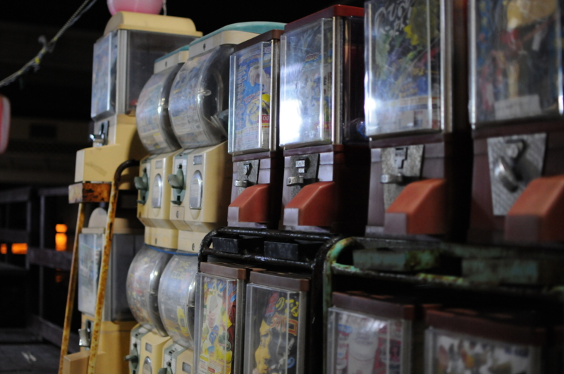
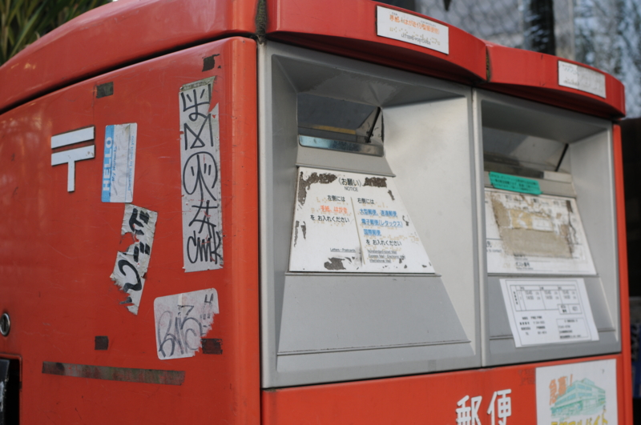
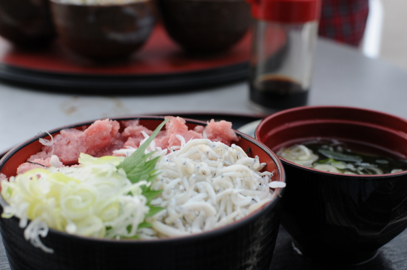

Nikon AF-S DX NIKKOR 35mm f/1.8G AFSDX35 1.8G を買ってみた
公開日：

うちのカメラは Nikon D300s（＋Nikon 1 V1）なのだけど、この前レンズ構成を変えたのさ。
当初（16-85mm ＋ 70-300mm）

Nikon 標準ズームレンズ AF-S DX NIKKOR 16-85mm f/3.5-5.6G ED VR ニコンDXフォーマット専用
- 出版社/メーカー: ニコン
- 発売日: 2008/02/22
- メディア: Camera
- クリック: 45回
- この商品を含むブログ (24件) を見る
@subsfn に 70-300mm （Nikon 望遠ズームレンズ AF-S VR Zoom Nikkor 70-300mm f/4.5-5.6G IF-ED フルサイズ対応）を譲ってもらったので、それではカバーできない部分を補うズームレンズとして 16-85mm F3.5-5.6G を購入した。
けれど、これだと取材の時に困った……記者説明会や勉強会の会場の広さにもよるのだけど、ちょうど 50mm-100mm あたりをつかうことが多く、頻繁にレンズを取り替えっこしなくちゃいけなくなった。これはめんどくせえ。
現在（18-200mm ＋ 70-300mm）

Nikon 高倍率ズームレンズ AF-S DX NIKKOR 18-200mm f/3.5-5.6G ED VR II ニコンDXフォーマット専用
- 出版社/メーカー: ニコン
- 発売日: 2009/09/04
- メディア: Camera
- クリック: 14回
- この商品を含むブログ (7件) を見る
ということで、16-85mm F3.5-5.6G はヤフオクで手放して、代わりに 18-200mm f/3.5-5.6G を買った。
18-200mm f/3.5-5.6G は結構使い勝手がいい。たいていは、これ一本でイケる*1。勉強会で撮った写真は、だいたいこのレンズで撮ってる。
単焦点レンズ

Nikon 単焦点レンズ AF-S DX NIKKOR 35mm f/1.8G ニコンDXフォーマット専用
- 出版社/メーカー: ニコン
- 発売日: 2009/03/06
- メディア: Camera
- 購入: 14人 クリック: 331回
- この商品を含むブログ (73件) を見る
ただ、これだけではあんまり面白くない……便利すぎるし。というわけで、手頃なお値段で買える短焦点レンズを買って、おっさん三人でテルマエ・ロマエしてきた - だるろぐ はこれ一本で過ごしてみた。Nikon 1 V1 はずっと 10mm の単焦点だけど、あんまり困ったことないし。

ぶっちゃけ、カメラやレンズの良し悪しはよくわからん。でも、ズームがなくて不便な分、面白いところもあるかなぁ、と思った。結構軽いし、これだったら気軽に持ち出せる気がする。
贅沢をいえば、この価格帯のもっと広角なレンズがほしいなぁ。
*1:逆に、すっかり 70-300mm F4.5-5.6G を使わなくなってしまった。まぁ、当分は売らずに置いておこうと思うけれど